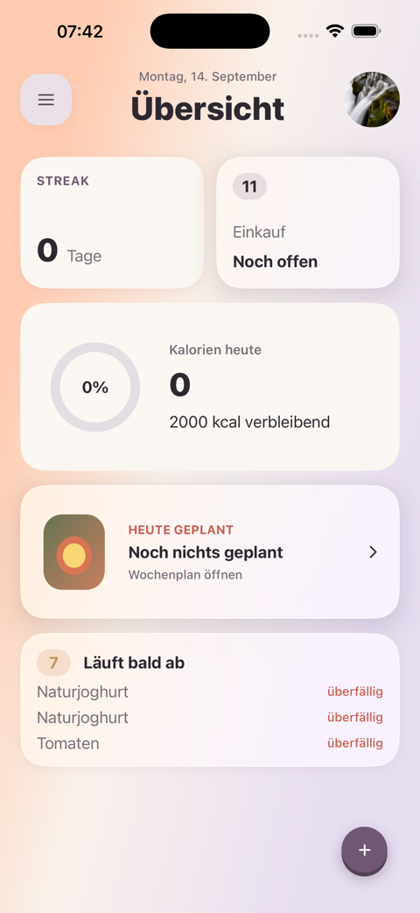

fam · UI-Richtung · Speed Dial
fam sitzt im bestehenden Plus-Menü
Der aktuelle Plus-Button bleibt unverändert. Erst nach dem Antippen erscheint fam als zusätzlicher Eintrag im Speed Dial, neben Vorrat, Einkauf, Tagebuch und Rezept.

+
famfam
Rezept⌁
Tagebucheintrag◉
Einkaufsartikel▤
Vorratsartikel□
×
fam
Hi Marco
Wobei soll fam euch gerade helfen?
✦
Heute etwas verbrauchenEin konkreter Einstieg aus eurem Haushalt.›＋
Etwas anderesDen nächsten Schritt selbst bestimmen.›